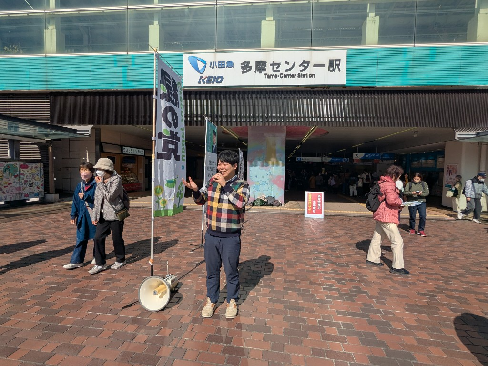
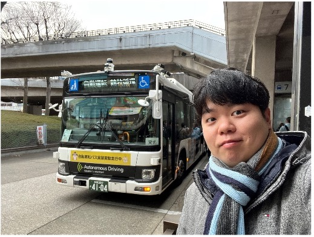
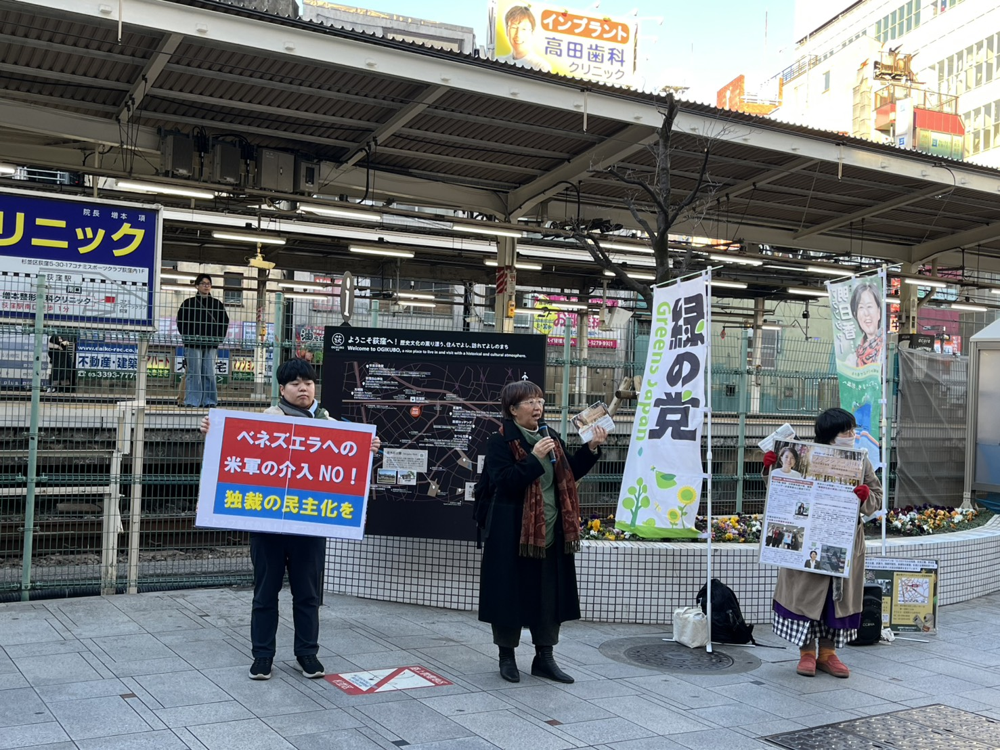
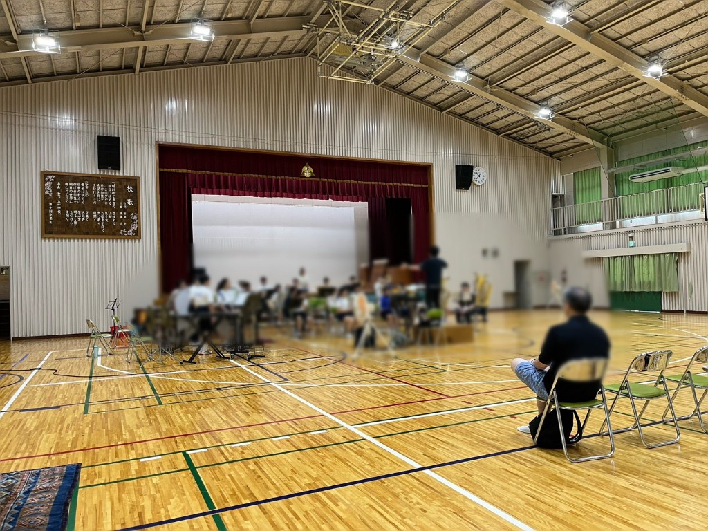
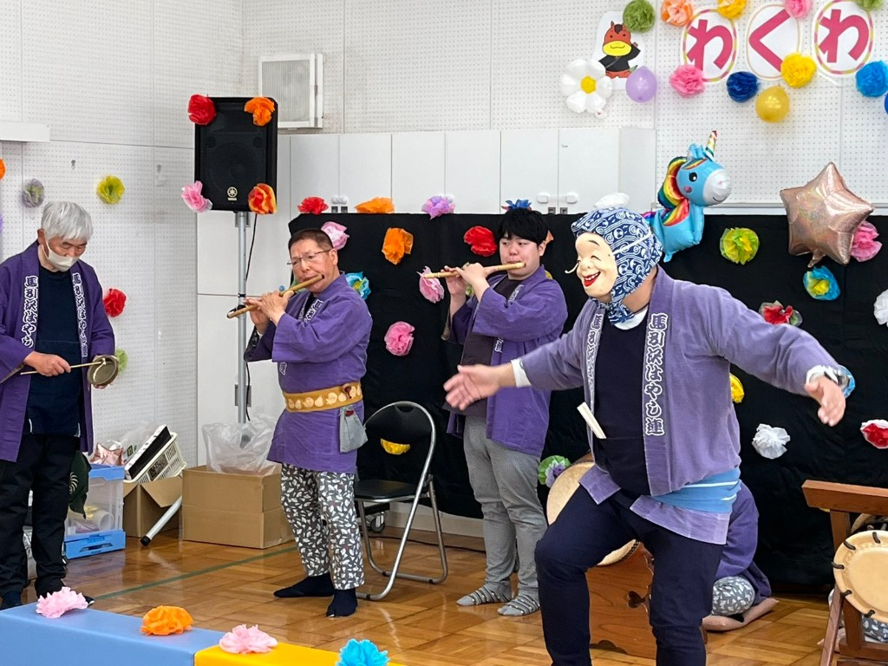
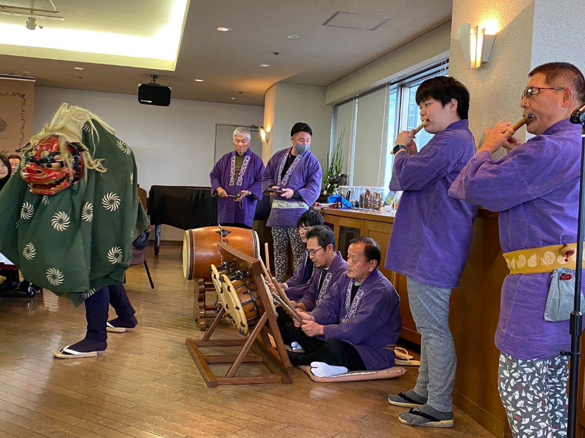
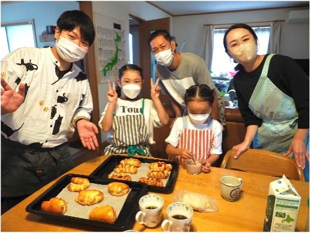

並び替え：

多摩センター・永山で街頭演説＆ポスティング大会！
緑の党のリレートークでニュースレターを配布しながら多摩センター・永山で街頭演説。午後は仲間とポスティング大会！

選挙が終わって・・・
選挙活動を終えて、これからの活動について考えていることをお伝えします。

自動運転バスに乗車しました
運転手不足への対策としての実証実験に参加しました。

ベネズエラ軍事介入反対
トランプ政権のやり方にNO！街頭での呼びかけを行いました。

ひじり館音楽祭
女声ハーモニーゆりのきさんとのFluteコラボと、聖ヶ丘ウィンドアンサンブルの2団体で出演しました。

社会福祉法人の秋まつりにて
町田の生活介護事業所の秋まつりで、ユニオンブラスさんの賛助として吹奏楽演奏に参加しました。

初めての部活動指導員
聖ヶ丘中学校吹奏楽部のコンクール前練習を外部指導員として見学。懐かしの曲「センチュリア」と再会しました。

諏訪児童館わくわくフェスタ
馬引沢はやし連として諏訪児童館わくわくフェスタのオープニングを演奏。地域密着型のイベントに初めて参加しました。

長崎で平和を考える
原爆被害の勉強会とピースウォークに参加。被爆者のお話を伺い、核兵器のない未来への想いを強くしました。

馬引沢自治会の新年会
馬引沢自治会の新年会でお囃子の演奏をしました。能登半島の被災者への黙祷から始まった温かい会でした。
デイサービス施設でのフルート演奏
多摩センターのデイサービス施設でフルートを演奏。手書き看板に感激しながら、7曲を演奏しました♪
選挙活動が終わりました！
選挙活動を終えて、皆様への感謝の気持ちをお伝えします。
多摩市議選、折り返し地点です！
選挙活動の折り返し地点での状況と想いをお伝えします。
政党の公認について
政党の公認に関する考え方についてお話しします。
フシギな公費負担制度の限度額
選挙における公費負担制度について考察します。

昨年行ったパン教室について
地域の皆様と一緒に行ったパン教室の様子をご紹介します。
初ブログ！
はじめてのブログ投稿です。これからよろしくお願いします。